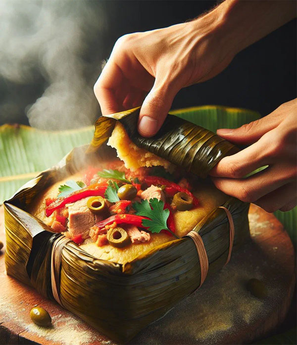

Nicaraguan Nacatamales Recipe
Nacatamales are a traditional Nicaraguan dish with as much cultural history behind them as flavour inside them. These filled parcels are built around fresh masa (corn dough) and most often stuffed with meltingly tender pork, though other fillings are common too. A generous mix of aromatic spices gives nacatamales their unmistakeable caracter. Wrapped in banana leaves and gently steamed, they appear at festive occasions up and down the country and remain one of the best-loved plates in the Nicaraguan kitchen.
Ingredients
- 300 g pork (shoulder or belly)
- 2-3 banana leaves
- 1 onion
- 2 garlic cloves
- 1 teaspoon ground cumin
- 2 - 3 potatoes,diced
- Salt and pepper to taste
- Water
Steps
- Begin soaking the banana leaves in hot water so they turn soft. The meat should be marinated and then braised in a pan with garlic,onion and spices until it is properly tender. While the pork simmers away, dice the potatoes and set them aside, ready to go into the parcels later on.
- Cut the pork into cubes and fry it off with the onion,garlic and spices.
- Add the potatoes and cook everything together until the meat is tender.
- Spread the banana leaves out on a clean surface and place a portion of masa on each.
- Spoon a share of the meat mixture and a few potatoe cubes into the centre of the dough.
- Fold the dough around the filling and wrap each parcel carefully in its banana leaf.
- Steam the nacatamales for roughly 1-1.5 hours.
- Unwrap gently after steaming and serve warm.